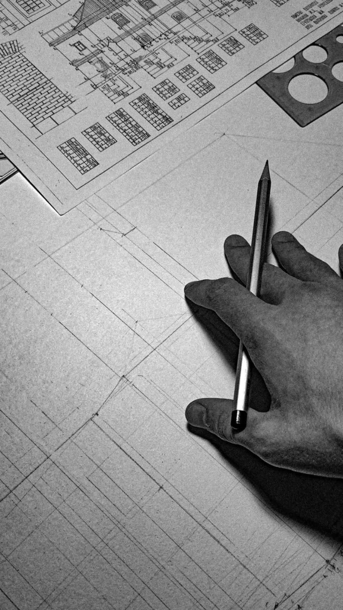

- Born:
- September 3, 1856 — Boston, Massachusetts, US
- Died:
- April 14, 1924 — Chicago, Illinois, US (age 67)
Sullivan gave the steel-frame office building its first clear form: a base for shops, a stack of identical office floors, and a cornice to close the top.
With Dankmar Adler he built theaters, offices and exchanges across Chicago and the Midwest. Adler handled engineering and acoustics; Sullivan handled the facades and drew the cast iron and terracotta ornament himself, dense leaf patterns grown out of simple geometry.
He wrote at length about architecture and democracy. Frank Lloyd Wright worked in his office from the late 1880s into the early 1890s.